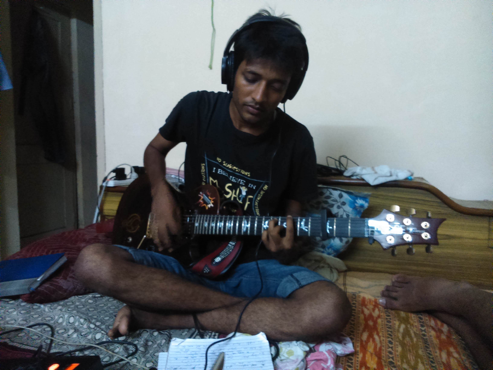

Kho Gaya Hu
It was in 2014 when I had finished my engineering and was looking out for jobs. It was tough time when everything I got felt like was falling apart. As music always have been an amazing savior, came to rescue, and Kho Gaya Hu was born. It took merely 40 minutes to get the music and lyrics. It all just came naturally. I was alone in the flat tinkering with my guitar in hot June afternoon.

Those were the days when my friends were telling me how to prepare a good resume, my dad asked to prepare for government jobs and I had just quit an intern position at a startup, after 5 days at work, as they weren't ready to pay well. And here was me, trying to match the harmony on G major. Along with all this, I had to hold onto the broken heart as well. College was over and it seemed like the end of all good moments.
When nothing feels right, and emotions take a toll on me, music is a good way to distract. Being an invtroverted personality, it is always easy for me to express it all in writing. Haha, such a Dear Diary moment!
It was fun time too because a lot was going on around with Soul Raaga, a in house recording studio that me and Ankit Godle had started to try an experimental genre Sufi with Electronic music.
You can find the link to your favorite music platform for the song here on Kho Gaya Hu
Here is what all the feelings meant back then.